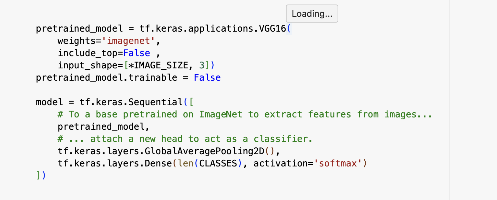
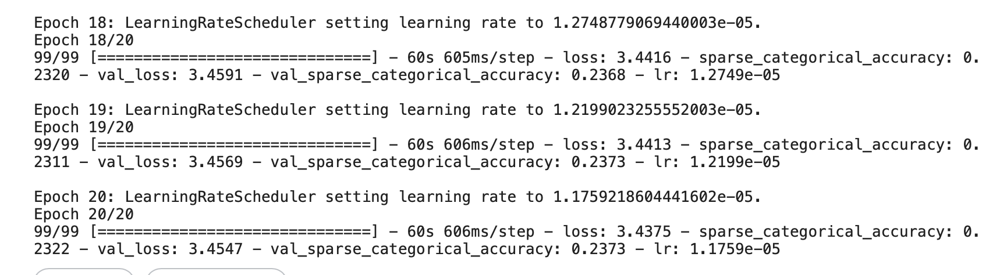
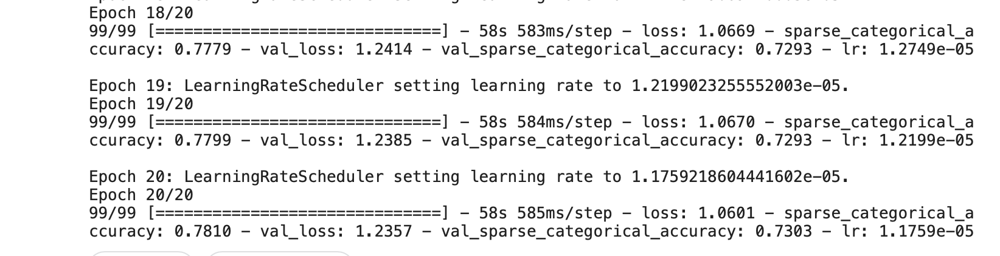
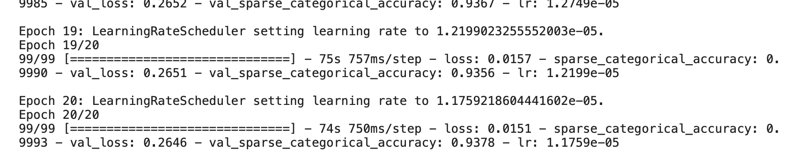

In this blog post, we explore the application of transfer learning for image classification. The goal is to build an accurate yet lightweight model suitable for deployment in resource-constrained environments like mobile devices and Arduino boards.
We adopted a transfer learning approach experimenting with VGG16, MobileNet and InceptionV3 models, well-known architectures pre-trained on ImageNet. The model consists of a base with frozen convolutional layers and a custom head for classification. This allows us to leverage pre-learned features while adapting the model to our specific task.
To optimize training, i used an exponential learning rate schedule. The schedule gradually increases the learning rate, maintains a constant rate for a specified duration, and then exponentially decays it. This dynamic learning rate helps the model converge faster and achieve better accuracy.
  After training the model, i analyzed the results. Transfer learning outperformed training from scratch, with InceptionV3 achieving the highest validation accuracy of 0.9378. For resource-efficient deployment, we recommend using MobileNet, which has significantly fewer parameters and still achieves an accuracy of 0.73.
My crucial consideration was building a model not only for accuracy but also for lightweight and immediate inferences in computationally compromised environments. This aligns with the goal of deploying the model on mobile devices and Arduino boards, where computational resources are limited.
In conclusion, this project demonstrates the effectiveness of transfer learning for image classification. The choice of a suitable pre-trained model and careful consideration of the learning rate schedule contribute to achieving a balance between accuracy and model efficiency.